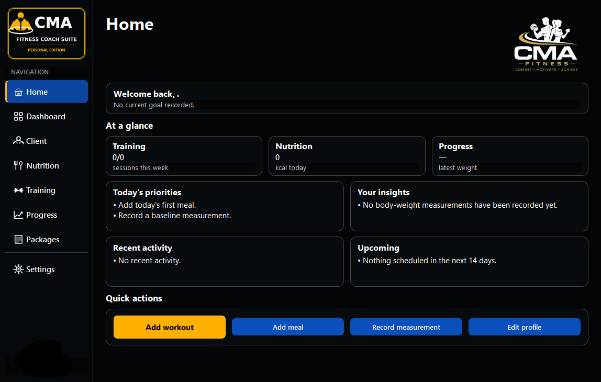
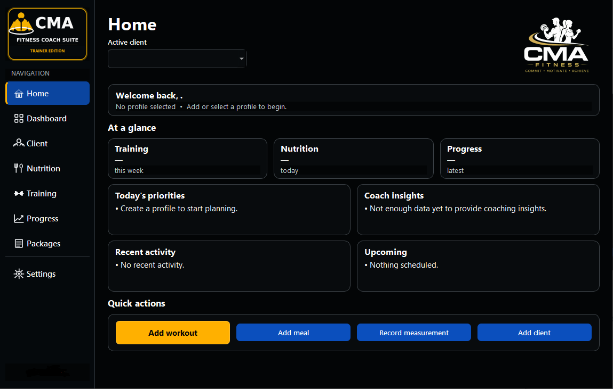
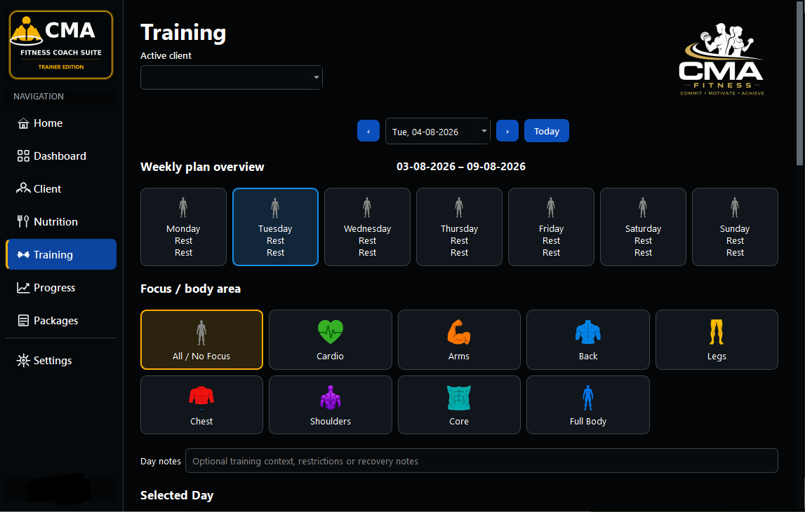
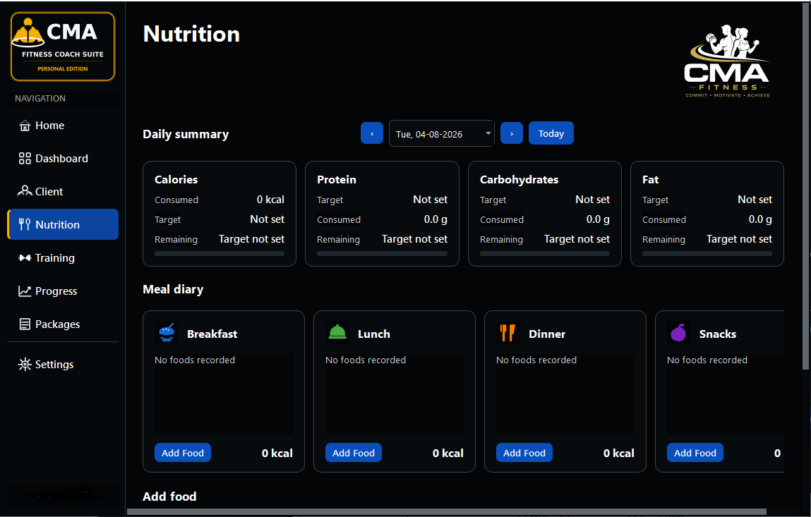

Training
Follow assigned workouts and record completed exercises, sets, repetitions and weights.
For individual users
A free, private Windows application for following trainer-prepared training and nutritional data while recording your own progress.
Your side of the fitness partnership
The Personal Edition helps you keep workouts, meals, nutrition and body measurements together. To gain its intended benefit, training programmes and nutritional data are prepared and supplied by a participating trainer.

Core capabilities
Follow assigned workouts and record completed exercises, sets, repetitions and weights.
Record meals and food quantities while reviewing calories and macronutrients.
Maintain measurements and review meaningful changes over time.
Export supported information for compatible import into the Trainer Edition.
Application views

Daily information at a glance.

Follow and record assigned workouts.

Record meals and nutritional information.
The official Microsoft Store link will be added when the public listing is available.